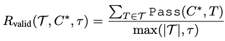

Learning to Generate Unit Test via Adversarial Reinforcement Learning
Overview
Unit testing is a core practice in programming, enabling systematic evaluation of programs produced by human developers or large language models (LLMs). Given the challenges in writing comprehensive unit tests, LLMs have been employed to automate unit test generation, yet methods for training LLMs to produce high-quality unit tests remain underexplored.
High-quality tests must do more than execute successfully: they should detect subtle faults and reliably separate better code solutions from near-correct ones. Therefore, unit test generation is an open-ended task with no single fixed answer. Moreover, while code solutions can be collected at large scale from diverse LLM instruction-tuning datasets, high-quality unit tests are typically not available at scale.
If we can reliably define rewards for arbitrary unit tests, RL can be more suitable for training LLMs for unit test generation than learning to imitate reference unit tests. Based on this idea, we propose UTRL, an adversarial reinforcement learning framework in which a unit test generator and a code generator are trained to provide reliable reward signals to each other.
Method
Our key insight is on defining rewards for unit test generation based on relationships between unit test generation and code generation.
In perspective of a code generation, the generated code should pass entire test cases in the unit test. Otherwise, in perspective of a unit test generation, the generated unit test should be able to detect subtle errors in arbitrary code solutions, and at the same time, each test case in the unit test should be functionally correct and executable.
Inspired by this relationship, we train unit test generator and code generator in adversarial manner, where (1) the unit test generator is trained to maximize a discrimination reward, encouraging it to produce tests that reveal faults in the code generator’s solutions; and (2) the code generator is trained to maximize a code reward, en- couraging it to produce solutions that pass the unit tests generated by the unit test generator. In the following section, we provide details of the rewards for training unit test generator, where we utilize the weighted sum of two reward temrs: discrimination reward and validity reward.
Discrimination reward
This reward measures whether generated unit tests can distinguish generated code solutions (sampled from a code generator LLM) from ground-truth solutions. In short, it quantifies how well tests expose subtle errors across multiple candidate code solutions generated by code generator LLMs.
Example figure below illustrates the process of computing discrimination reward w.r.t generated unit test. The unit test consists of multiple test cases (5 test cases in the example), and each test case is executed against ground-truth code solution C*. If a test case passes under the ground-truth code solution (test case 1, 3, 5 in the example), it is considered a valid test case. Otherwise, it is considered as a faulty test case (test case 2, 4 in the example), and it is discarded for discrimination reward computation. This is because using faulty test cases in computing discrimination reward can mislead the unit test generator to learn to generate faulty test cases that fail even under the ground-truth code solution, which is not our goal. As a next step, discrimination reward computes how many LLM-generated code solutions (C1 ~ C6 in the example) are failed by at least one valid test case (test case 1, 3, 5 in the example) in the unit test. In the figure, as C1, C3, C4, C5 are failed by at least one valid test case, discrimination reward is computed as 4/6.

Validity reward
This reward measures how many generated test cases are functionally correct. It is computed by executing each test cases in the generated unit tests against the ground-truth code solution, and checking whether the test case can be executed successfully without runtime errors and failed assertions. This reward encourages the unit test generator to produce functionally correct and executable test cases, which are essential for reliable code evaluation.
However, we observe that defining validity reward as the ratio of valid test cases among the entire test cases leads to bias the model to generate unit tests with only a few valid test cases. Therefore, we introduce additional clipping term in computing validity reward function. Specifically, We clip the denominator of the validity reward, which ensures that unit tests with fewer than specific number of (\tau) test cases receive a validity reward proportional to the absolute number of valid test cases, thereby preventing the unit tests with a small number of trivial test cases from receiving high validity rewards.

UTRL
Based on these rewards, we alternate between training the unit test generator and the code generator. Unit test generator is optimized to maximize the weighted sum of discrimination and validity rewards, while code generator is optimized to generated code solutions that can pass the unit tests generated by the unit test generator.

By repeating these steps, the code generator produces more higher-quality (near perfect) code solutions, which in turn provide more challenging discrimination task for the unit test generator, rendering the unit test generator learn to generate more higher-quality unit tests.
Evaluation Metrics
Ultimately, the quality of a unit test should be judged by how well it captures subtly faulty code. Well-known proxy metrics such as Line Coverage and Mutation Score are useful, but they mainly reflect whether tests touch specific execution paths. They are limited in evaluating whether a test can catch highly subtle failures, such as code solutions that still pass more than 90% of oracle test cases. To enable a more thorough evaluation of generated unit tests, we propose two metrics for LLM-generated unit tests.
1. Best-of-N Improvement
We sample candidate code solutions with diverse code LLMs (Qwen3-4B, 8B, 14B, GPT-4o) using 32-shot generation. For each task, we use generated unit tests to select a single best candidate, then evaluate that selected code with human-curated oracle unit tests. This metric captures how well generated tests identify high-quality solutions in practice.
2. Unit Test Fidelity
Unit Test Fidelity measures alignment between scores induced by generated unit tests and scores induced by human-curated unit tests. For each problem, we collect score vectors over hundreds of sampled code solutions, then compute Spearman's \(R\) between the oracle-score vector and the generated-test score vector. Higher correlation indicates that generated tests induce code evaluation behavior closer to oracle tests.
Key Results


- UTRL surpasses supervised fine-tuning: Models trained with UTRL (without ground-truth unit tests) generate higher-quality unit tests than models trained with SFT using ground-truth unit tests, showing that learning to detect LLM-generated code solutions is more effective than directly imitating reference tests.
- Small models trained via UTRL outperform large closed-source models: Qwen3-4B trained with UTRL generates higher-quality unit tests than GPT-4o and GPT-4.1, achieving 14.9% accuracy versus GPT-4o's 10.6% and GPT-4.1's 13.7% (when evaluating Qwen3-8B code generation).
- Unit tests from small UTRL models improve larger code generators: Unit tests generated by UTRL-trained 4B models effectively improve code generation performance of much larger models (e.g., 8B, 14B, and GPT-4o).
- Co-evolving test generation and code generation: When we use unit tests generated by the UTRL-trained unit test generator to run RL for code generation, code generation performance improves substantially. Notably, this setup outperforms code-generation RL trained with unit tests generated by GPT-4o.
Please check our paper for more details.
BibTeX
@inproceedings{lee2026utrl,
title={Learning to Generate Unit Test via Adversarial Reinforcement Learning},
author={Lee, Dongjun and Hwang, Changho and Lee, Kimin},
booktitle={International Conference on Learning Representations (ICLR)},
year={2026},
url={https://arxiv.org/abs/2508.21107}
}